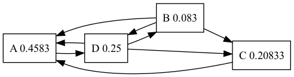

Barak-Nadav Diker
Created: 2023-05-25 Thu 00:24
1. Definition
Pagerank is an algorithm used by google search to rank web pages in their search engine
In Simpler words : PageRank is a way of measuring the importance of a website
2. Notable quote by google
PageRank works by counting the number and quality of links to a page to determine a rough estimate of how important the website is. The underlying assumption is that more important websites are likely to receive more links from other websites.
3. Nice to know
PageRank and all associated patent are expired !!
4. So What’s the formula ?
The Naive algorithm is the following formula
\[ PR(u) = \sum_{v \in V-u}\frac{PR(v)}{L(v)} \]
Where \( L \colon V \to \mathbb{N} \) is number of outbounds links and \(PR \colon V \to [0,1] \) is the PageRank of a vertex and the initial probability is \( \forall v \in V , PR(v)=\frac{1}{|V|} \)
5. Simple Example
Note the following graph
PR(A) = 0.25
PR(B) = 0.25
PR(C) = 0.25
PR(D) = 0.25

5.1. After first iteration
We’ll Calculate explicitly for PR(A)
\[ PR(A)= \frac{PR(B)}{L(B)} + \frac{PR(C)}{L(C)} + \frac{PR(D)}{L(D)} \] \[ PR(A)= \frac{0.25}{2} + \frac{0.25}{1} + \frac{0.25}{3}\]

6. Is there a problem ?
- If a page has no links to other pages, it becomes a sink and therefore terminates the random surfing process!
Sound vague .. Why is it a problem ?
7. intuition
In Each iteration every note “passes” all his probability to it’s outbound neighbours
but if one of the notes doesn’t have outbound edges he’ll receive probability but the note won’t export his probablity
So the sum of the probability of all nodes \( \sum_{v \in V}PR(v) = 1-PR(v_i) < 1 \) where \( v_i \) is the probability of sink in the previous iteration
8. Example
Example with sink

8.1. in the first iteration
Note that node B and node C passes all it’s probability to node A And node A passes 0.333 to nobody !

9. Damping Factor
solution : if we’ll reach a sink we’ll jump to a random note (Uniformly) by the formula \[ PR(p_{i})= \frac{1-d}{N} + d \sum_{p_{j} \in B_{p_i}} \frac{PR(p_j)}{L(p_j)} \] Where d is usually 0.85 i.e \( d=0.85 \) and \( B_{p_i} \) is the set containing all pages linking to page u and \( L(p_j) \) is the number of links from \( p_j \)
Why will it work ?? how ??
10. Some Notable code
int main()
{
cout << "Hello" << endl;
}
11. Slide 1
- List item 1

- List item 2

12. Nice Code Animation
let index = 1
12.1. Added value
let index = 1
let value = 2
13. some equation
\[ \sin(x) = \frac{1}{n} \]